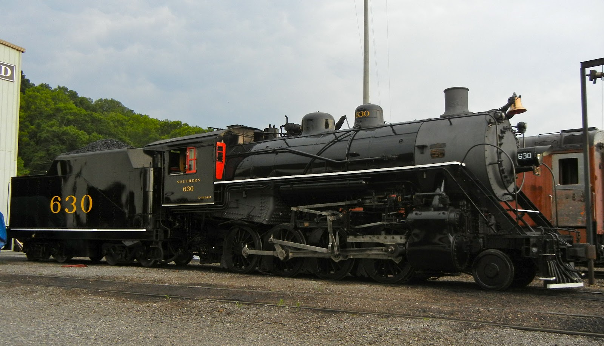

Locomotives In Depth
Southern 630
Southern Railway 630 is a 2-8-0 "Consolidation" type steam locomotive built in February 1904 by the American Locomotive Company of Richmond, Virginia for the Southern Railway as a member of the Ks-1 class. At first she worked at Knoxville, Tn. but then was moved to Asheville, NC. to work freight trains on the Murphy Branch. It was in Asheville that it met its sister 722. They worked together in Asheville until 1952 when they were retired from service. 630 and 722 would later be sold to the East Tennessee & Western North Carolina where they became 207 & 208. In 1968 they would be traded back to the Southern Railway for two ALCO RS3s. They would pulled excurisons on the Southern until 1980 when they went to TVRM. 630 worked there until 1989 when she was pulled from service in need of work. In 2001 work began and was finished in 2011. It is currently owned and operated by the Tennessee Valley Railroad Museum in Chattanooga, Tennessee where it resides today for use on excursion trains.
United States Army Transport Corp./ Tennessee Valley 610
US Army 610 was built in March 1952 and was the last steam locomotive to be built be Baldwin-Lima-Hamition for an American customer. She was sent to work at Fort Eustis Military Railroad. When Fort Eustis decommissioned steam operations in 1972 610 was obtained by the Wiregrass Heritage Chapter of the National Railway Historical Society of Dothan, Alabama. In 1978 she was sold to the Southern Railway who looked into restoring her for excursions, however they deamed her to small and to much work so they donated her to TVRM who displayed her at East Chattaanooga for most of the 80s. In 1987 They started work on restoring her to operation and in 1990 she steamed again. She took part in Norfolk Southern steam program from 1990 to 1993 before returning to TVRM and working the museum for the rest of the 90s. She would the only operation steam locomotive at TVRM from 1998 to 2010 when she was pulled from service in need of a rebuild. Today she sits at East Chattnooga awaiting the call to return to steam.
Southern 722
Southern 722 was ordered by the Southern Railway in September of 1904 with the Baldwin Locomotive Works. She worked out of Asheville, NC. handling freight trains on the Murphy Branch. Then in 1917 it met its sister 630. They worked together in Asheville until 1952 when they were retired from service. 630 and 722 would later be sold to the East Tennessee & Western North Carolina where they became 207 & 208. In 1968 they would be traded back to the Southern Railway for two ALCO RS3s. They would pulled excurisons on the Southern until 1980 when they went to TVRM. 722 worked there until 1987 when she was pulled from service in need of work. She stayed there until the end of 1992. She was then put on displace at the Biltmore in Asheville, NC. then she was pulled off display later in the 90s, then she was sold to the Great Smoky Mountain Railroad in 1999 and moved there in 2000. She is under going a rebuilt to operation.
Central of Georgia 349
Built as Savannah & Western Railway 557, she was the very first of her class and was jointed by 5 other sisters. The locomotive became Central of Georgia 1587 in 1894. It was renumbered to 1581 in 1912, and finally renumbered 349 in 1926. In 1937 she was leased to the Talbotton Railroad near Albany, GA. until it went out of business. She was retired in 1954 from revenue service and keep until 1962 for special events. In 1962 she was sold to the Stone Mountain Railroad to be used there, but she never was for some reason. Sometime during the late 1960s she was sold to a private owner who at some point painted her green and gold and lettered her for the Southern Railway. In 1987 she was donated to TVRM and was placed on display at Grand Junction. She is now on long term loan to Erlanger Children's Hospital.
- Southern 630 TVRM page
- Southern 630 Wiki
- TVRM 610 TVRM page
- TVRM 610 Wiki
- Southern 722 Wiki
- COG 349 TVRM page